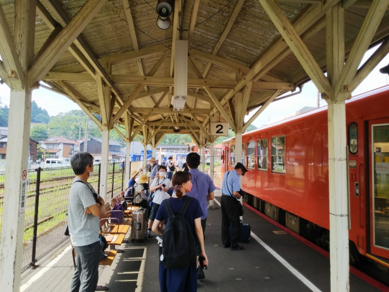
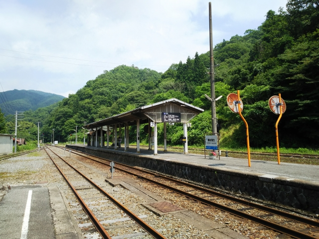

早朝の松江駅。夜行バスで到着しましたが、全然寝
れず、朝から疲れとります。
早速、始発列車で米子へ。
米子に到着。
ここも建て替えか・・・
車両の写真撮影に忙しい息子は置いといて、市内を
１０分ぐらい歩くと・・・見えてきました！
昭和４２年に廃止された、日ノ丸自動車法勝寺鉄道
の車両です。
明治２２年、関西鉄道（現在の関西本線・草津線・
片町線・紀勢本線・桜井線・和歌山線・奈良線・大
阪環状線の前身）開業時に輸入された由緒ある客車
だそうです。
大事に保存されてますね。。
米子駅に戻って、西へ向かいます。
松江駅ではちょうど国鉄色に復活したやくもが到着。
国鉄時代のような並びです。
宍道駅に到着。ちょうど着陸する飛行機がデカく見
えてビックリしたのですが、出雲空港がすぐそばに
ありました。
ここから木次線に乗り込みます。

この車両も国鉄色に塗られてるんや。
木次駅に到着です。
木次は思ってた以上に大きい駅でした。駅前にスー
パーまであってビックリ。
ここからは、来年度いっぱいで引退が決まった奥出
雲おろち号に乗車です！
本当は前日の日曜に乗りたかったのですが、発売す
ぐに売り切れ！再チャレンジしてようやく入手した
貴重な切符です！


到着した時にはすでに南側の引き上げ線に待機していたおろち号がホームにやってきました。

平日というのに満席でした。
いよいよ出発。機関車が最後尾で、運転大変ヤンと思ったら、客車の端にも運転台があって、そこに運転手がいてました。
出雲坂根に到着。ここからいよいよ木次線最大の名
所、３段スイッチバックです。
ここからようやく機関車が先頭です。

さっき来た線路が下に見えます。
「３段スイッチバック」ですが、Ｚの形です。それ
って３段なの？２段やないの？？
スイッチバックを登り切って、いよいよ終着へ。
しかし車掌がおろちループという名の道路を名所の
ごとく紹介するのは納得いかんなぁ。木次線衰退の
元凶やで。
無事、備後落合に到着。
おろち号が無くなったあとは、代わりにあめつちが
木次線に入るものの、車両重量の関係でスイッチバ
ック区間までは運航されないとのこと。出雲横田以
南を廃止に持って行く思慮遠謀を感じんこともない
・・・

備後落合はいい駅です。２時間ほど列車は来ないので、ホームのベンチで昼寝をさせてもらいました。
一日数本しか列車の来ないこの駅に、珍しく２方向
から列車がやってきました。我々は西へ向かいます。
三次に到着。三次も新しい駅舎になってもうてる・
・・
売店もなくて、寂しい限りです。
少し東に戻って、塩町駅。福塩線の分岐駅ですね。
ここから福塩線に乗換えます。
三次から府中行がやってきました。
途中乗車やし、青春１８シーズンやし、混んでたら
どないしょ・・・。
というのは完全な杞憂でした。
さすが廃止候補区間、すいてました。
山の中をえっちらおっちら走って府中に到着。
府中まで来ると、結構な街です。福塩線は府中以北
と以南で全然違う路線です。乗ってきた区間は廃止
候補、これから乗る区間は、買収私鉄区間で本数も
圧倒的に多いっす。
無事、福山に到着。
帰り着くまで、まだまだ長いなぁ・・・